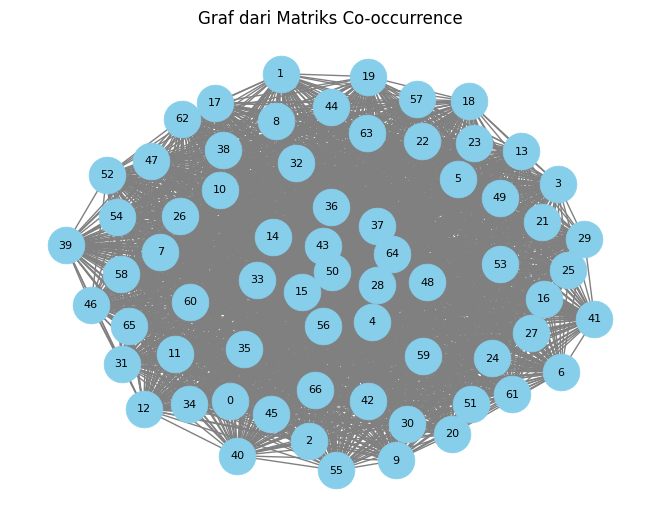

Ekstraksi keyword#
import pandas as pd
# menghubungkan ke drive
from google.colab import drive
drive.mount('/content/drive')
---------------------------------------------------------------------------
KeyboardInterrupt Traceback (most recent call last)
<ipython-input-2-70185c791581> in <cell line: 3>()
1 # menghubungkan ke drive
2 from google.colab import drive
----> 3 drive.mount('/content/drive')
/usr/local/lib/python3.10/dist-packages/google/colab/drive.py in mount(mountpoint, force_remount, timeout_ms, readonly)
101 def mount(mountpoint, force_remount=False, timeout_ms=120000, readonly=False):
102 """Mount your Google Drive at the specified mountpoint path."""
--> 103 return _mount(
104 mountpoint,
105 force_remount=force_remount,
/usr/local/lib/python3.10/dist-packages/google/colab/drive.py in _mount(mountpoint, force_remount, timeout_ms, ephemeral, readonly)
130 )
131 if ephemeral:
--> 132 _message.blocking_request(
133 'request_auth', request={'authType': 'dfs_ephemeral'}, timeout_sec=None
134 )
/usr/local/lib/python3.10/dist-packages/google/colab/_message.py in blocking_request(request_type, request, timeout_sec, parent)
174 request_type, request, parent=parent, expect_reply=True
175 )
--> 176 return read_reply_from_input(request_id, timeout_sec)
/usr/local/lib/python3.10/dist-packages/google/colab/_message.py in read_reply_from_input(message_id, timeout_sec)
94 reply = _read_next_input_message()
95 if reply == _NOT_READY or not isinstance(reply, dict):
---> 96 time.sleep(0.025)
97 continue
98 if (
KeyboardInterrupt:
# membaca file CSV yang berada pada path dan menyimpannya dalam sebuah DataFrame bernama data.
data = pd.read_csv("/content/drive/MyDrive/ppw/tugas/Data/data_label_news.csv")
data
| Date | Title | Content | Label | |
|---|---|---|---|---|
| 0 | 01-10-2023 | Megawati Ungkap Orang Luar Tak Bisa Langsung J... | jpnn.com, JAKARTA - Ketua Umum PDI Perjuangan ... | politik |
| 1 | 01-10-2023 | Peringati Hari Kesaktian Pancasila, KawanJuang... | jpnn.com, PURWAKARTA - Para sukarelawan penduk... | politik |
| 2 | 01-10-2023 | Ganjar dan Anies Hadiri Acara IdeaFest, di Man... | jpnn.com, JAKARTA - Ketiga bacapres Ganjar Pra... | politik |
| 3 | 01-10-2023 | Silaturahmi ke Rembang, Anies Diberi Tongkat K... | jpnn.com, JAKARTA - Anies Baswedan mengunjungi... | politik |
| 4 | 01-10-2023 | Survei Erick Thohir Teratas di Jatim, Pengamat... | jpnn.com, JAKARTA - Nama Erick Thohir punya ke... | politik |
| ... | ... | ... | ... | ... |
| 1723 | 01-11-2023 | Lalu Muhammad Zohri Finis Keenam, Indonesia Pa... | jpnn.com, JAKARTA - Kontingen atlet Indonesia ... | Olahraga |
| 1724 | 01-11-2023 | Garuda Muda Siap Beri Obat Pelipur Lara Bagi F... | jpnn.com - Tim bulu tangkis beregu campuran In... | Olahraga |
| 1725 | 01-11-2023 | Bulu Tangkis Asian Games 2022: Tim Putra China... | jpnn.com - Tim bulu tangkis beregu putra China... | Olahraga |
| 1726 | 01-11-2023 | Asian Games 2022: Kehabisan Bensin, Timnas Bas... | jpnn.com - Timnas basket putra Indonesia menga... | Olahraga |
| 1727 | 01-11-2023 | Real Madrid Berpesta di Kandang Girona, Ada In... | jpnn.com - CATALONIA - Real Madrid kembali mem... | Olahraga |
1728 rows × 4 columns
#install library
!pip install sastrawi
!pip install swifter
!pip install gensim
Collecting sastrawi
Downloading Sastrawi-1.0.1-py2.py3-none-any.whl (209 kB)
?25l ━━━━━━━━━━━━━━━━━━━━━━━━━━━━━━━━━━━━━━━━ 0.0/209.7 kB ? eta -:--:--
━━━━━━━━━━━━━━━━━━━━━╺━━━━━━━━━━━━━━━━━━ 112.6/209.7 kB 3.2 MB/s eta 0:00:01
━━━━━━━━━━━━━━━━━━━━━━━━━━━━━━━━━━━━━━━━ 209.7/209.7 kB 4.4 MB/s eta 0:00:00
?25hInstalling collected packages: sastrawi
Successfully installed sastrawi-1.0.1
Collecting swifter
Downloading swifter-1.4.0.tar.gz (1.2 MB)
━━━━━━━━━━━━━━━━━━━━━━━━━━━━━━━━━━━━━━━━ 1.2/1.2 MB 16.1 MB/s eta 0:00:00
?25h Preparing metadata (setup.py) ... ?25l?25hdone
Requirement already satisfied: pandas>=1.0.0 in /usr/local/lib/python3.10/dist-packages (from swifter) (1.5.3)
Requirement already satisfied: psutil>=5.6.6 in /usr/local/lib/python3.10/dist-packages (from swifter) (5.9.5)
Requirement already satisfied: dask[dataframe]>=2.10.0 in /usr/local/lib/python3.10/dist-packages (from swifter) (2023.8.1)
Requirement already satisfied: tqdm>=4.33.0 in /usr/local/lib/python3.10/dist-packages (from swifter) (4.66.1)
Requirement already satisfied: click>=8.0 in /usr/local/lib/python3.10/dist-packages (from dask[dataframe]>=2.10.0->swifter) (8.1.7)
Requirement already satisfied: cloudpickle>=1.5.0 in /usr/local/lib/python3.10/dist-packages (from dask[dataframe]>=2.10.0->swifter) (2.2.1)
Requirement already satisfied: fsspec>=2021.09.0 in /usr/local/lib/python3.10/dist-packages (from dask[dataframe]>=2.10.0->swifter) (2023.6.0)
Requirement already satisfied: packaging>=20.0 in /usr/local/lib/python3.10/dist-packages (from dask[dataframe]>=2.10.0->swifter) (23.2)
Requirement already satisfied: partd>=1.2.0 in /usr/local/lib/python3.10/dist-packages (from dask[dataframe]>=2.10.0->swifter) (1.4.1)
Requirement already satisfied: pyyaml>=5.3.1 in /usr/local/lib/python3.10/dist-packages (from dask[dataframe]>=2.10.0->swifter) (6.0.1)
Requirement already satisfied: toolz>=0.10.0 in /usr/local/lib/python3.10/dist-packages (from dask[dataframe]>=2.10.0->swifter) (0.12.0)
Requirement already satisfied: importlib-metadata>=4.13.0 in /usr/local/lib/python3.10/dist-packages (from dask[dataframe]>=2.10.0->swifter) (6.8.0)
Requirement already satisfied: python-dateutil>=2.8.1 in /usr/local/lib/python3.10/dist-packages (from pandas>=1.0.0->swifter) (2.8.2)
Requirement already satisfied: pytz>=2020.1 in /usr/local/lib/python3.10/dist-packages (from pandas>=1.0.0->swifter) (2023.3.post1)
Requirement already satisfied: numpy>=1.21.0 in /usr/local/lib/python3.10/dist-packages (from pandas>=1.0.0->swifter) (1.23.5)
Requirement already satisfied: zipp>=0.5 in /usr/local/lib/python3.10/dist-packages (from importlib-metadata>=4.13.0->dask[dataframe]>=2.10.0->swifter) (3.17.0)
Requirement already satisfied: locket in /usr/local/lib/python3.10/dist-packages (from partd>=1.2.0->dask[dataframe]>=2.10.0->swifter) (1.0.0)
Requirement already satisfied: six>=1.5 in /usr/local/lib/python3.10/dist-packages (from python-dateutil>=2.8.1->pandas>=1.0.0->swifter) (1.16.0)
Building wheels for collected packages: swifter
Building wheel for swifter (setup.py) ... ?25l?25hdone
Created wheel for swifter: filename=swifter-1.4.0-py3-none-any.whl size=16505 sha256=41d820e648dc732565ddaf5cfb19d0ae78241ea27d49a71489002c6a6e6681a4
Stored in directory: /root/.cache/pip/wheels/e4/cf/51/0904952972ee2c7aa3709437065278dc534ec1b8d2ad41b443
Successfully built swifter
Installing collected packages: swifter
Successfully installed swifter-1.4.0
Requirement already satisfied: gensim in /usr/local/lib/python3.10/dist-packages (4.3.2)
Requirement already satisfied: numpy>=1.18.5 in /usr/local/lib/python3.10/dist-packages (from gensim) (1.23.5)
Requirement already satisfied: scipy>=1.7.0 in /usr/local/lib/python3.10/dist-packages (from gensim) (1.11.3)
Requirement already satisfied: smart-open>=1.8.1 in /usr/local/lib/python3.10/dist-packages (from gensim) (6.4.0)
Memecah kalimat dari dokumen#
# Impor pustaka spaCy
import spacy
# Memuat model bahasa Inggris spaCy
nlp = spacy.load("en_core_web_sm")
# Mengambil dokumen
dokumen = data['Content'].iloc[1700]
# Analisis teks menggunakan spaCy
doc = nlp(dokumen)
# Mencetak setiap kalimat dari dokumen
for i, kalimat in enumerate(doc.sents):
print(f"Kalimat {i + 1}: {kalimat.text}")
Kalimat 1: jpnn.com - TOCHIGI – Bendera merah terpaksa dikibarkan saat race MotoGP Jepang 2023 di Mobility Resort Motegi, Minggu (1/10) siang WIB baru setengah jalan.
Kalimat 2: Kondisi trek yang tergenang air membuat keselamatan pembalap terancam.
Kalimat 3: Saat red flag berkibar, Jorge Martin memimpin, disusul Francesco Bagnaia, dan Marc Marquez.
Kalimat 4: Tak lama setelah seluruh pembalap tiba di garasinya masing-masing, hujan deras benar-benar mengguyur Mobility Resort Motegi.
Kalimat 5: Sebelumnya, seluruh pembalap sudah mengganti motornya (penyesuaian ban).
Kalimat 6: Hampir 80 persen pembalap mengganti motor (flag to flag) seusai
Kalimat 7: lap ke-1.Perlombaan pun menjadi tegang.
Kalimat 8: Para pembalap berupaya menjaga kesabaran.
Kalimat 9: Pada lap ke-10, di saat trek makin basah, Martin memimpin, disusul Bagnaia, Marco Bezzecchi, Miguel Oliveira, dan Marquez.
Kalimat 10: Seluruh pembalap memacu motornya dengan penuh kehati-hatian.
Membentuk co-occurancy matriks dari kata dalam kalimat#
import nltk
nltk.download('punkt')
[nltk_data] Downloading package punkt to /root/nltk_data...
[nltk_data] Unzipping tokenizers/punkt.zip.
True
import nltk
import numpy as np
import networkx as nx
import matplotlib.pyplot as plt
from nltk.tokenize import sent_tokenize, word_tokenize
from itertools import combinations
from collections import defaultdict
import string
import pandas as pd
from nltk.corpus import stopwords
# Download NLTK stopwords for Indonesian
nltk.download('stopwords')
# Tokenisasi kalimat
kalimat_list = sent_tokenize(dokumen)
# Mengambil 3 sampai 5 kalimat
kalimat_terpilih = kalimat_list[:10]
# Menggabungkan kalimat menjadi satu teks
teks = ' '.join(kalimat_terpilih)
# Menghilangkan tanda baca ,.- dari teks
teks_cleaned = teks.translate(str.maketrans('', '', string.punctuation))
# Tokenisasi kata
words = word_tokenize(teks_cleaned.lower()) # Mengonversi ke huruf kecil
# Hapus stopwords menggunakan NLTK stopwords Bahasa Indonesia
stop_words = set(stopwords.words('indonesian'))
filtered_words = [word for word in words if word.lower() not in stop_words]
# Membuat matriks co-occurrence
co_occurrence_matrix = defaultdict(lambda: defaultdict(int))
# Menghitung frekuensi kemunculan kata bersama
for i, j in combinations(range(len(filtered_words)), 2):
word_i, word_j = filtered_words[i], filtered_words[j]
co_occurrence_matrix[word_i][word_j] += 1
co_occurrence_matrix[word_j][word_i] += 1
# Menampilkan matriks co-occurrence dalam bentuk tabel menggunakan pandas
words_list = sorted(set(filtered_words))
matrix_size = len(words_list)
co_occurrence_matrix_array = np.zeros((matrix_size, matrix_size), dtype=int)
for i, word_i in enumerate(words_list):
for j, word_j in enumerate(words_list):
co_occurrence_matrix_array[i][j] = co_occurrence_matrix[word_i][word_j]
df_co_occurrence = pd.DataFrame(co_occurrence_matrix_array, index=words_list, columns=words_list)
print("DataFrame Co-occurrence:")
print(df_co_occurrence)
# Membuat graf dari matriks co-occurrence
G = nx.Graph(co_occurrence_matrix_array)
DataFrame Co-occurrence:
110 2023 80 air bagnaia ban basah benarbenar bendera \
110 0 1 1 1 2 1 1 1 1
2023 1 0 1 1 2 1 1 1 1
80 1 1 0 1 2 1 1 1 1
air 1 1 1 0 2 1 1 1 1
bagnaia 2 2 2 2 2 2 2 2 2
... ... ... .. ... ... ... ... ... ...
to 1 1 1 1 2 1 1 1 1
tochigi 1 1 1 1 2 1 1 1 1
trek 2 2 2 2 4 2 2 2 2
wib 1 1 1 1 2 1 1 1 1
– 1 1 1 1 2 1 1 1 1
berkibar ... siang tegang terancamsaat tergenang terpaksa to \
110 1 ... 1 1 1 1 1 1
2023 1 ... 1 1 1 1 1 1
80 1 ... 1 1 1 1 1 1
air 1 ... 1 1 1 1 1 1
bagnaia 2 ... 2 2 2 2 2 2
... ... ... ... ... ... ... ... ..
to 1 ... 1 1 1 1 1 0
tochigi 1 ... 1 1 1 1 1 1
trek 2 ... 2 2 2 2 2 2
wib 1 ... 1 1 1 1 1 1
– 1 ... 1 1 1 1 1 1
tochigi trek wib –
110 1 2 1 1
2023 1 2 1 1
80 1 2 1 1
air 1 2 1 1
bagnaia 2 4 2 2
... ... ... ... ..
to 1 2 1 1
tochigi 0 2 1 1
trek 2 2 2 2
wib 1 2 0 1
– 1 2 1 0
[67 rows x 67 columns]
[nltk_data] Downloading package stopwords to /root/nltk_data...
[nltk_data] Unzipping corpora/stopwords.zip.
# Menentukan node dan kata pada setiap node
node_kata_mapping = {i: kata for i, kata in enumerate(words_list)}
# Menampilkan node dan kata pada setiap node
for node, kata in node_kata_mapping.items():
print(f"Node {node}: Kata = {kata}")
Node 0: Kata = 110
Node 1: Kata = 2023
Node 2: Kata = 80
Node 3: Kata = air
Node 4: Kata = bagnaia
Node 5: Kata = ban
Node 6: Kata = basah
Node 7: Kata = benarbenar
Node 8: Kata = bendera
Node 9: Kata = berkibar
Node 10: Kata = berupaya
Node 11: Kata = bezzecchi
Node 12: Kata = deras
Node 13: Kata = dikibarkan
Node 14: Kata = disusul
Node 15: Kata = flag
Node 16: Kata = francesco
Node 17: Kata = garasinya
Node 18: Kata = hujan
Node 19: Kata = jalankondisi
Node 20: Kata = jepang
Node 21: Kata = jorge
Node 22: Kata = jpnncom
Node 23: Kata = ke10
Node 24: Kata = ke1perlombaan
Node 25: Kata = kehatihatian
Node 26: Kata = kesabaranpada
Node 27: Kata = keselamatan
Node 28: Kata = lap
Node 29: Kata = marc
Node 30: Kata = marco
Node 31: Kata = marquezseluruh
Node 32: Kata = marqueztak
Node 33: Kata = martin
Node 34: Kata = masingmasing
Node 35: Kata = memacu
Node 36: Kata = memimpin
Node 37: Kata = mengganti
Node 38: Kata = mengguyur
Node 39: Kata = menjaga
Node 40: Kata = merah
Node 41: Kata = miguel
Node 42: Kata = minggu
Node 43: Kata = mobility
Node 44: Kata = motegi
Node 45: Kata = motegisebelumnya
Node 46: Kata = motogp
Node 47: Kata = motor
Node 48: Kata = motornya
Node 49: Kata = oliveira
Node 50: Kata = pembalap
Node 51: Kata = penuh
Node 52: Kata = penyesuaian
Node 53: Kata = persen
Node 54: Kata = race
Node 55: Kata = red
Node 56: Kata = resort
Node 57: Kata = siang
Node 58: Kata = tegang
Node 59: Kata = terancamsaat
Node 60: Kata = tergenang
Node 61: Kata = terpaksa
Node 62: Kata = to
Node 63: Kata = tochigi
Node 64: Kata = trek
Node 65: Kata = wib
Node 66: Kata = –
Membentuk grap dari co-occurancy matriks G#
# Menampilkan graf
pos = nx.spring_layout(G)
nx.draw(G, pos, with_labels=True, font_size=8, font_color='black', node_size=700, node_color='skyblue', edge_color='gray', arrowsize=10, linewidths=0.5)
plt.title('Graf dari Matriks Co-occurrence')
plt.show()

Menghitung centrality dari node dalam graph#
-Clossnes centrality nx.centrality(G)
# menghitung closeness centrality dari setiap simpul pada graf berarah G, mengurutkannya secara menurun
closeness_centrality = nx.closeness_centrality(G)
sorted_closeness = sorted(closeness_centrality.items(), key=lambda x: x[1], reverse=True)
print("\nSorted Closeness Centrality:")
for node, closeness in sorted_closeness:
print(f"Node {node}: {closeness:.4f}")
Sorted Closeness Centrality:
Node 0: 1.0000
Node 1: 1.0000
Node 2: 1.0000
Node 3: 1.0000
Node 4: 1.0000
Node 5: 1.0000
Node 6: 1.0000
Node 7: 1.0000
Node 8: 1.0000
Node 9: 1.0000
Node 10: 1.0000
Node 11: 1.0000
Node 12: 1.0000
Node 13: 1.0000
Node 14: 1.0000
Node 15: 1.0000
Node 16: 1.0000
Node 17: 1.0000
Node 18: 1.0000
Node 19: 1.0000
Node 20: 1.0000
Node 21: 1.0000
Node 22: 1.0000
Node 23: 1.0000
Node 24: 1.0000
Node 25: 1.0000
Node 26: 1.0000
Node 27: 1.0000
Node 28: 1.0000
Node 29: 1.0000
Node 30: 1.0000
Node 31: 1.0000
Node 32: 1.0000
Node 33: 1.0000
Node 34: 1.0000
Node 35: 1.0000
Node 36: 1.0000
Node 37: 1.0000
Node 38: 1.0000
Node 39: 1.0000
Node 40: 1.0000
Node 41: 1.0000
Node 42: 1.0000
Node 43: 1.0000
Node 44: 1.0000
Node 45: 1.0000
Node 46: 1.0000
Node 47: 1.0000
Node 48: 1.0000
Node 49: 1.0000
Node 50: 1.0000
Node 51: 1.0000
Node 52: 1.0000
Node 53: 1.0000
Node 54: 1.0000
Node 55: 1.0000
Node 56: 1.0000
Node 57: 1.0000
Node 58: 1.0000
Node 59: 1.0000
Node 60: 1.0000
Node 61: 1.0000
Node 62: 1.0000
Node 63: 1.0000
Node 64: 1.0000
Node 65: 1.0000
Node 66: 1.0000
- Pagerank centrality nx.pagerank (G)
# Menampilkan PageRank centrality
pagerank_centrality = nx.pagerank(G)
print("PageRank Centrality:")
for node, centrality in pagerank_centrality.items():
print(f"{node}: {centrality}")
PageRank Centrality:
0: 0.01235325776841179
1: 0.01235325776841179
2: 0.01235325776841179
3: 0.01235325776841179
4: 0.022490418328200673
5: 0.01235325776841179
6: 0.01235325776841179
7: 0.01235325776841179
8: 0.01235325776841179
9: 0.01235325776841179
10: 0.01235325776841179
11: 0.01235325776841179
12: 0.01235325776841179
13: 0.01235325776841179
14: 0.02249041832820067
15: 0.032627578887989554
16: 0.01235325776841179
17: 0.01235325776841179
18: 0.01235325776841179
19: 0.01235325776841179
20: 0.01235325776841179
21: 0.01235325776841179
22: 0.01235325776841179
23: 0.01235325776841179
24: 0.01235325776841179
25: 0.01235325776841179
26: 0.01235325776841179
27: 0.01235325776841179
28: 0.02249041832820067
29: 0.01235325776841179
30: 0.01235325776841179
31: 0.01235325776841179
32: 0.01235325776841179
33: 0.02249041832820067
34: 0.01235325776841179
35: 0.01235325776841179
36: 0.02249041832820067
37: 0.02249041832820067
38: 0.01235325776841179
39: 0.01235325776841179
40: 0.01235325776841179
41: 0.01235325776841179
42: 0.01235325776841179
43: 0.02249041832820067
44: 0.01235325776841179
45: 0.01235325776841179
46: 0.01235325776841179
47: 0.01235325776841179
48: 0.022490418328200677
49: 0.01235325776841179
50: 0.06303906056735618
51: 0.01235325776841179
52: 0.01235325776841179
53: 0.01235325776841179
54: 0.01235325776841179
55: 0.01235325776841179
56: 0.022490418328200677
57: 0.01235325776841179
58: 0.01235325776841179
59: 0.01235325776841179
60: 0.01235325776841179
61: 0.01235325776841179
62: 0.01235325776841179
63: 0.01235325776841179
64: 0.022490418328200677
65: 0.01235325776841179
66: 0.01235325776841179
Merangking node (kata) dari centrality#
# Menampilkan node yang diurutkan berdasarkan PageRank centrality
sorted_nodes = sorted(pagerank_centrality, key=pagerank_centrality.get, reverse=True)
print("Node yang diurutkan berdasarkan PageRank Centrality:")
for node in sorted_nodes:
print(f"{node}: {pagerank_centrality[node]}")
Node yang diurutkan berdasarkan PageRank Centrality:
50: 0.06303906056735618
15: 0.032627578887989554
48: 0.022490418328200677
56: 0.022490418328200677
64: 0.022490418328200677
4: 0.022490418328200673
14: 0.02249041832820067
28: 0.02249041832820067
33: 0.02249041832820067
36: 0.02249041832820067
37: 0.02249041832820067
43: 0.02249041832820067
0: 0.01235325776841179
1: 0.01235325776841179
2: 0.01235325776841179
3: 0.01235325776841179
5: 0.01235325776841179
6: 0.01235325776841179
7: 0.01235325776841179
8: 0.01235325776841179
9: 0.01235325776841179
10: 0.01235325776841179
11: 0.01235325776841179
12: 0.01235325776841179
13: 0.01235325776841179
16: 0.01235325776841179
17: 0.01235325776841179
18: 0.01235325776841179
19: 0.01235325776841179
20: 0.01235325776841179
21: 0.01235325776841179
22: 0.01235325776841179
23: 0.01235325776841179
24: 0.01235325776841179
25: 0.01235325776841179
26: 0.01235325776841179
27: 0.01235325776841179
29: 0.01235325776841179
30: 0.01235325776841179
31: 0.01235325776841179
32: 0.01235325776841179
34: 0.01235325776841179
35: 0.01235325776841179
38: 0.01235325776841179
39: 0.01235325776841179
40: 0.01235325776841179
41: 0.01235325776841179
42: 0.01235325776841179
44: 0.01235325776841179
45: 0.01235325776841179
46: 0.01235325776841179
47: 0.01235325776841179
49: 0.01235325776841179
51: 0.01235325776841179
52: 0.01235325776841179
53: 0.01235325776841179
54: 0.01235325776841179
55: 0.01235325776841179
57: 0.01235325776841179
58: 0.01235325776841179
59: 0.01235325776841179
60: 0.01235325776841179
61: 0.01235325776841179
62: 0.01235325776841179
63: 0.01235325776841179
65: 0.01235325776841179
66: 0.01235325776841179
Menentukan beberapa kata penting berdasarkan rangking#
# Menentukan jumlah kata penting yang ingin diambil
jumlah_kata_penting = 5
# Memilih sejumlah node teratas berdasarkan PageRank centrality
kata_penting = sorted(pagerank_centrality, key=pagerank_centrality.get, reverse=True)[:jumlah_kata_penting]
# Membuat pemetaan node ke kata
node_kata_mapping = {node: kata for node, kata in enumerate(words)}
# Menampilkan kata pada node terpenting saja
print(f"{jumlah_kata_penting} Kata Penting Beserta PageRank Centrality:")
for node in kata_penting:
kata = node_kata_mapping.get(node, "Tidak Diketahui")
centrality = pagerank_centrality.get(node, "Tidak Diketahui")
print(f"Node {node}: Kata = {kata}, PageRank Centrality = {centrality}")
5 Kata Penting Beserta PageRank Centrality:
Node 50: Kata = masingmasing, PageRank Centrality = 0.06303906056735618
Node 15: Kata = motegi, PageRank Centrality = 0.032627578887989554
Node 48: Kata = di, PageRank Centrality = 0.022490418328200677
Node 56: Kata = resort, PageRank Centrality = 0.022490418328200677
Node 64: Kata = ban, PageRank Centrality = 0.022490418328200677